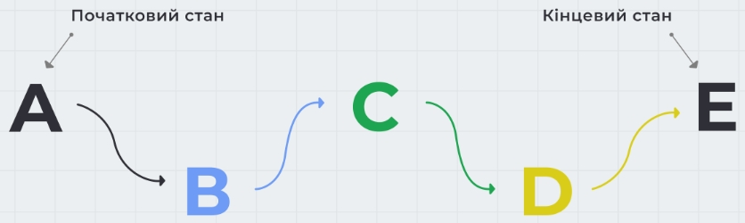

CSS
-
Контролює тінь тексту, а також встановлює її параметри: колір, зміщення і радіус розмиття.
text-shadow: < зміщення по x>, < зміщення по y>, < радіус розмиття>, < колір>
.title {color: #ffffff;
text-shadow: 2px 2px 4px #000000;}На один елемент можна додати кілька тіней, вказавши їх через кому.
.title { color: #ffffff;
text-shadow: 2px 2px 20px #ff0000, 5px 5px 5px #000000; } -
Градієнт
Градієнт - перехід від одного кольору до іншого.
Градієнт в CSS - це фонове зображення, тому задається у властивості background-image.
-
Лінійний градієнт
linear-gradient(< напрямок>, < колір-1>, < колір-2>, < колір-3>, ...)
Створюється за допомогою двох і більше кольорів, для яких заданий напрямок поширення.
Напрямок градієнта може задаватися ключовими словами to top, to right, to bottom, to left та їх комбінаціями. Якщо напрямок не вказаний, використовується значення за замовчуванням - зверху вниз (to bottom).
-
Суцільний градієнт
Градієнт - це плавний перехід між кольорами, але якщо двом сусіднім з них задати однакові колорстопи, отримаємо суцільні кольори і різкий перехід між ними. Це можна використовувати для створення «смугастого» фону.
background-image: linear-gradient(
to right,
#c64f4f 15%,
#09792b 15%,
#09792b 40%,
#00b9ff 40%,
#00b9ff 65%,
#ffb800 65%
);для вертикального або кутового поширення в елемента повинна бути висота від його контенту або явно вказана.
/* Задаємо body мінімальну висоту, що дорівнює 100% висоти в'юпорту */
div.tile {height: 100vh;
/* І додаємо вертикальний градієнт з to bottom або кутовий, наприклад з to bottom right */ } -
Радіальний градієнт
radial-gradient(< тип> < центр>, < колір-1>, < колір-2>, < колір-3>, ...);
Радіальний градієнт відрізняється від лінійного тим, що кольори виходять з центру градієнта і рівномірно поширюються назовні, приймаючи форму еліпса.
Форма градієнта визначається ключовими словами circle або ellipse
-
Повторюваний градієнт
Повторюваний градієнт може бути лінійним або радіальним, і дозволяє зробити цікаві декоративні ефекти. Найчастіше повторюваний градієнт роблять суцільним.
background-image: repeating-linear-gradient(
to left,
blue,
blue 20px,
red 20px,
red 40px /* Визначає розмір градієнта */ ); -
Смугасті заголовки
Повторюваний градієнт можна використовувати для створення цікавих ефектів, наприклад «смугастих» заголовків або будь-яких інших елементів.
-
Колорстоп (color-stop)
За замовчуванням кольори градієнта розподіляються рівномірно, але цим можна управляти, використовуючи колорстопи - точки переходу, до яких буде поширюватися певний колір. Значенням можуть бути пікселі або відсотки.
background-image: linear-gradient(
to right,
#f44336 15%, - червоний колір (#f44336) буде поширюватися від 0% до 15%
#09792b 40%, - зелений колір (#09792b) буде поширюватися від 15% до 40%
#00b9ff 65%, - синій колір (#00b9ff) буде поширюватися від 40% до 65%
#ffb800 - жовтий колір (#ffb800) буде поширюватися від 65% до 100%);
-
Тінь елемента
Генератор тіні-
задає елементу одну або більше тіней.
box-shadow: < x-offset> < y-offset> < blur> < spread> < color>
x-offset - горизонтальне зміщення. Додатне значення зміщує тінь вправо від блоку, від'ємне - вліво. Обов'язкове значення.
y-offset - вертикальне зміщення. Додатне значення зміщує тінь вниз, від'ємне - вгору. Обов'язкове значення.
blur - радіус розмитості. Що більше значення, то розмитіша тінь. Необов'язкове значення.
spread - радіус поширення. Додатне значення збільшує тінь, від'ємне - зменшує. Необов'язкове значення.
color - колір тіні. Можна використовувати будь-який формат запису кольору. Необов'язкове значення..post {box-shadow: 10px 10px 8px 2px rgba(0, 0, 0, 0.3);}
Тінь з однієї сторони
Використовуючи від'ємний радіус поширення (значення spread), можна стиснути тінь блоку, зробивши її меншою за розмір елемента, і задати зміщення тільки з однієї сторони
.post:nth-child(1) { box-shadow: 0 10px 10px -5px rgba(0, 0, 0, 0.3);}
-
Внутрішня тінь
box-shadow: inset < x-offset> < y-offset> < blur> < spread> < color>< /color>
Зміщення, розмитість і поширення тіні відбувається всередині елемента і візуально обмежено його рамкою.
-
Багатошарова тінь
На один елемент можна додати кілька тіней, вказавши їх через кому.
box-shadow: < x-offset> < y-offset> < blur> < spread> < color>,
< x-offset> < y-offset> < blur> < spread> < color>,
< x-offset> < y-offset> < blur> < spread> < color>, ... -
Декоративні ефекти
Використовуючи тіні, псевдоелементи, а також трансформації і позиціонування, яке ми розглянемо далі у курсі, можна робити дуже цікаві ефекти. Наприклад, візуально загнуті кути картки.
-
CSS-переходи
CSS-переходи дозволяють анімувати зміну значення властивості з плином часу, керуючи швидкістю цього переходу. Зміна властивостей відбувається під час настання певної події, яка описується відповідним псевдокласом, наприклад :hover.
Перехід завжди має тільки два стани - початкове та кінцеве значення властивості, і вміє змінювати це значення A > B і B > A за вказаний час. Для анімацій з великою кількістю станів необхідно використовувати CSS-анімацію.
-
Наступні чотири властивості управляють різними параметрами переходу.
transition-property: < властивість>
transition-duration: < час>
transition-timing-function: < функція розподілу часу>
transition-delay: < затримка>Все, що необхідно зробити - це вказати початкові значення анімованих властивостей і значення властивостей переходу, після чого під час події, наприклад :hover, задати нові значення властивостей, до яких ми хочемо анімувати елемент.
-
Властивість transition-property
Задає властивості, до яких буде застосований ефект переходу. Значенням може бути одна властивість або список властивостей через кому. За замовчуванням значення all - анімуються всі можливі властивості.
.box { background-color: teal; transition-property: background-color;}
.box:hover { background-color: orange;}Список властивостей, які можуть бути анімовані в майбутньому може змінитися. Тому обов'язково необхідно вказувати властивість, яку потрібно анімувати, інакше будуть анімовані всі можливі властивості елемента, що призведе до несподіваних результатів.
-
Властивість transition-duration
Якщо тривалість переходу не вказана, то зміна значень відбудеться миттєво без анімації. Властивість transition-duration задає проміжок часу, протягом якого повинен відбутися перехід. Вказується в секундах, наприклад 2s або 0.5s, або в мілісекундах - 2000ms і 500ms відповідно. Якщо різні властивості мають різні значення часу переходу, то вони перелічуються через кому.
.box {
background-color: teal;
transition-property: background-color;
transition-duration: 1000ms;
} -
Властивість transition-timing-function
Задає функцію розподілу часу, яка описує швидкість переходу властивості від одного значення до іншого за час, вказаний в transition-duration, тобто поведінка анімації.
ПРИКЛАД.box {
background-color: teal;
transition-property: background-color;
transition-duration: 1000ms;
transition-timing-function: linear;
}В CSS існує кілька ключових слів для опису базових функцій Безьє. За замовчуванням використовується значення ease - перехід починається повільно, швидко прискорюється, а потім знову сповільнюється в кінці. Решта ключових слів: linear, ease-in, ease-out, і ease-in-out.
-
Властивість transition-delay
Затримка, після якої почнеться анімація переходу. Використовується для побудови сценаріїв - послідовності переходів різних елементів. За замовчуванням задано значення 0s.
.box {
background-color: teal;
transition-property: background-color;
transition-duration: 1000ms;
transition-timing-function: linear;
transition-delay: 500ms;
} -
Короткий запис переходу
transition: [property] [duration] [timing-function] [delay]
Якщо анімується кілька властивостей, то набір значень для кожного з них розділяється комою. Необхідно обов'язково вказати властивість і час переходу, функцію часу і затримку можна не вказувати, тоді для них будуть використані значення за замовчуванням.
transition: background-color 500ms linear, transform 500ms ease-in-out;
-
Анімовані властивості
З усіх властивостей, які можуть бути анімовані, рекомендується, якщо можливо, використовувати всього дві: opacity (прозорість) і transform (трансформація). Здебільшого анімація інших властивостей не суттєво вплине на продуктивність сторінки, але краще дотримуватися цього правила, щоб створювати максимально продуктивну анімацію.
-
CSS-анімація
Як і переходи, анімація надає веб-сторінкам динамічність, але, на відміну від переходів, анімації не потрібен обов'язковий ініціатор (подія), її можна повторити нескінченну кількість разів, і між початковим і кінцевим станами може бути будь-яка кількість проміжних станів.
Оголошення анімації
Анімація оголошується директивою @keyframes, яка дозволяє описати набір кадрів (frames, станів) анімації, яких повинно бути як мінімум два (початковий і кінцевий).
/* Ім'я повинно бути описовим, тобто, що це за анімація. */
@keyframes ім'яАнімації { /* Тут будуть описуватися кадри */}Кадри визначають, у який момент часу змінюються анімовані властивості, і описуються ключовими словами from (псевдонім 0%) і to (псевдонім 100%) або, найчастіше, у вигляді відсотків в діапазоні 0%-100%, оскільки відсотки дозволяють вказати довільне значення.
@keyframes changeBgColor {
0% { background-color: teal; }
50% { background-color: orange; }
100% { background-color: deepskyblue; }
}В анімації не вказується час або елемент, до якого вона буде застосовуватися, це означає, що одну і ту саму анімацію можна використовувати повторно для різних елементів.
-
Властивості анімації
animation-name
Щоб використовувати вже оголошену анімацію, потрібно вказати її ім'я як значення для властивості animation-name..box { animation-name: changeBgColor;}
animation-duration
Встановлює тривалість анімації - час, за який будуть пройдені всі кадри.Задається в секундах або мілісекундах. Якщо не поставити тривалість, анімація буде миттєвою.
За замовчуванням анімація відбувається один раз і фінальні значення анімованих властивостей не зберігаються, натомість елемент повертається до свого вихідного стану..box { animation-name: changeBgColor; animation-duration: 3000ms;}
animation-timing-function
Встановлює функцію розподілу часу для анімаціїзначення аналогічні transition-timing-function в CSS-переходах.
.box {
animation-name: changeBgColor;
animation-duration: 3000ms;
animation-timing-function: linear;
}animation-delay
Встановлює затримку перед початком анімації в секундах або мілісекундах.значення аналогічні transition-timing-function в CSS-переходах.
.box {
animation-name: changeBgColor;
animation-duration: 3000ms;
animation-timing-function: linear;
animation-delay: 1000ms;
}animation-iteration-count
Встановлює кількість повних повторень анімації.значення аналогічні transition-timing-function в CSS-переходах.
.box {
animation-name: changeBgColor;
animation-duration: 3000ms;
animation-timing-function: linear;
animation-iteration-count: 5;
}Значення може бути цілим додатним числом або ключовим словом infinite - це зробить анімацію нескінченною.

animation-direction
Контролює напрямок відтворення анімаціївід початкового до кінцевого кадру, навпаки від кінцевого кадру до початкового, або, можливо необхідно, щоб порядок чергувався на кожному повторенні.
.box {
animation-name: changeBgColor;
animation-duration: 3000ms;
animation-timing-function: linear;
animation-iteration-count: infinite;
animation-direction: alternate;
}normal - анімація відтворюється від початкового до кінцевого кадру, після чого відразу повертається у початковий кадр для наступного повторення (скидається до початкового стану). Це значення за замовчуванням.
reverse - анімація відтворюється у зворотному напрямку, починаючи від кінцевого кадру і до початкового, після чого відразу повертається у кінцевий кадр для наступного повторення.
alternate - перший раз відтворення починається від початкового і до кінцевого кадру, після чого відбувається зміна напрямку на кожному наступному повторенні.
alternate-reverse - перший раз відтворення починається від кінцевого і до початкового кадру, після чого відбувається зміна напрямку на кожному наступному повторенні.normalreversealternatealternate-reverseanimation-fill-mode: none | forwards | backwards | both
Визначає, що відбувається зі стилями елемента до початку анімації і після її завершення.none - стилі анімації впливають на елемент тільки під час анімації. До і після анімації елемент знаходиться у своєму початковому стані. Значення за замовчуванням.
forwards - стилі, застосовані в кінці анімації, залишаються на елементі після її завершення.
backwards - стартові стилі анімації будуть застосовані до елемента ще до старту анімації.
both - поєднує forwards і backwards, стилі застосовуються до і після анімації.noneforwardsbackwardsbothanimation-play-state
Дозволяє призупинити відтворення анімації.За замовчуванням встановлено значення running. Якщо встановити значення paused, наприклад при :hover, анімація буде припинена, доки курсор миші знаходиться над елементом.
-
Збірна властивість дозволяє коротше записати властивості анімації.
animation: [name] [duration] [timing-function] [delay] [iteration-count] [direction] [fill-mode] [play-state]
Значення необов'язкових властивостей можна пропустити або поміняти місцями. Виняток становлять властивості duration і delay - значення тривалості анімації завжди повинно зазначатися до затримки.
.box { animation: magic 2s infinite;}
.box { animation: magic 2s 0.5s ease-in-out;}
.box { animation: magic 2s ease-in-out 0.5s forwards;}
.box { animation: magic 2s forwards infinite ease-out 0.5s;}
@keyframes magic { /* ... */} -
-
Перспектива
За замовчуванням елемент рендериться у 2D-просторі та, у разі трансформацій, - по осях X та Y, наприклад rotate, викривляється і виглядає неприродно.
-
Функція perspective()
Це ще одна функція трансформації для властивості transform, яка дозволяє задати перспективу одному елементу, до якого застосовується.
rotateX(60deg)rotateY(60deg)Встановивши perspective(400px), ми говоримо браузеру про необхідність рендерити div.box у 3D-просторі, додаючи елементу глибину сцени та об'єм. Значення 400px - це відстань до сцени, на якій знаходиться елемент. Що менше значення, то ближче глядач до сцени і навпаки.
У разі використання відразу на декількох елементах, у кожного створюється своя сцена і перспектива, тобто глядач ніби дивиться на кожен елемент з різної точки.
-
Дозволяє створити однакову перспективу цілій групі елементів на сцені.
Властивість perspective
Ця властивість задається спільному контейнеру групи елементів (сцені), у нашому випадку - div.scene.
-
2D-трансформації
-
Відповідає за застосування однієї або більше трансформації до елемента.
transform: none | < тип трансформації> < тип трансформації> ...
Трансформований елемент - це елемент з будь-яким встановленим значенням властивості transform, відмінним від none.
-
Масштабування
Функції scaleX(tx), scaleY(ty) і scale(tx, ty) масштабують блок по ширині та/або висоті, не впливаючи на геометрію оточуючих елементів. Якщо для scale() вказано одне значення, друге буде таке саме.
Початковий масштаб елемента - 1. Значення від 1 до 0 зменшують елемент, більше 1 - навпаки, збільшують. Наприклад, значення scale(1.25) - це 125% від початкового розміру, а scale(0.75) - 75%.
.box { transform: scale(1.15);}
-
Поворот
Функція rotate(кут) повертає елементи на задану кількість градусів (одиниця deg). Додатні значення повертають елемент за годинниковою стрілкою, від'ємні - проти.
.box { transform: rotate(45deg);}
Значення можна передати не тільки в градусах, а й в «оборотах» (одиниця turn). Наприклад, rotate(0.5turn) - це половина обороту, аналог rotate(180deg).
-
Зміщення
Функції translateX(tx), translateY(ty) і translate(tx, ty) переміщують елемент в горизонтальному (вісь X) та/або вертикальному (вісь Y) напрямках щодо початкового положення.
Додатні значення X зміщують елемент вправо, від'ємні - вліво.
Додатні значення Y зміщують елемент вниз, від'ємні - вгору.Значення можуть бути в пікселях або відсотках. Якщо значення задане у відсотках, то воно розраховується на підставі розміру елемента, що зміщується.
.box { transform: translate(100px, 200px);}
-
Центрування елемента
Розглянемо прийом, за допомогою якого можна поставити абсолютно позиційований елемент точно по центру блоку, щодо якого він позиціонується. Техніка дуже проста і складається з трьох кроків.
Абсолютно позиціонуємо елемент щодо предка.
Задаємо елементу властивості top і left зі значенням 50%, це поставить верхній лівий кут елемента рівно по центру предка.
Задаємо елементу від'ємне зміщення (translate) по 50% його висоти і ширини. Це посуне елемент вгору і вліво, і відцентрує всередині предка..box {
position: absolute;
top: 50%;
left: 50%;
transform: translate(-50%, -50%);
} -
Викривлення
Функції skewX(кут), skewY(кут) і skew(x-кут, y-кут) використовуються для викривлення (нахилу, деформування) сторін елемента щодо координатних осей. Якщо для skew() вказане тільки одне значення, друге дорівнюватиме 0, тобто це буде аналог skewX().
.box { transform: skew(30deg);}
-
Точка трансформації
Властивість transform-origin дозволяє змістити точку трансформації, щодо якої відбувається зміна положення, розміру або форми елемента. Значення за замовчуванням — center, або 50% 50%. Задається лише для трансформованих елементів. Не наслідується.
У прикладі точка трансформації кожного елемента позначена синьою міткою. Значення можна вказувати не тільки ключовими словами, а також в пікселях або відсотках.top lefttop centertop rightcenter leftcenter centercenter rightbottom leftbottom centerbottom right